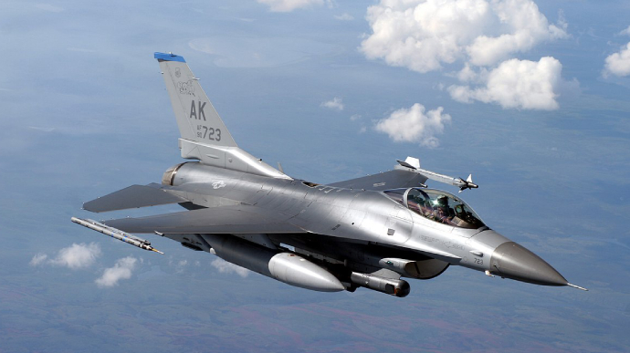
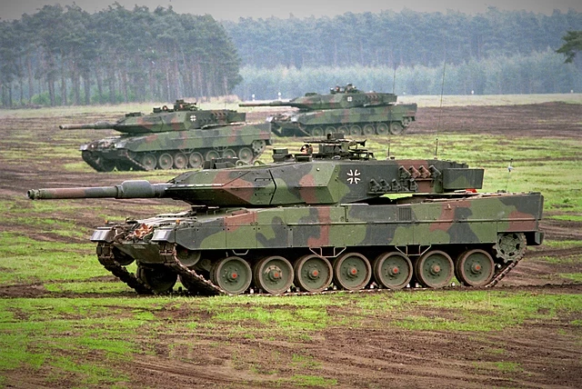
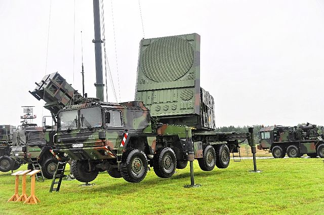
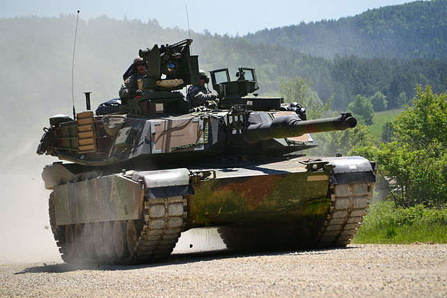

Винищувач F-16
Посилання на вікіпедію
Дженерал Дайнемікс F-16 «Фа́йтінг Фе́лкон» (англ. General Dynamics F-16 Fighting Falcon — «бойовий сокіл») — одномоторний багатофункціональний легкий винищувач, розроблений компанією «General Dynamics» для Повітряних сил (ПС) США. Розроблений як денний винищувач для отримання переваги у повітрі, він перетворився на всепогодний баготоцільовий літак. З моменту початку виробництва у 1976 році понад 4600 літаків було побудовано. Незважаючи на те, що ПС США більше не закуповують цей літак, покращені версії виробляються для експортних клієнтів. У 1993 році «General Dynamics» продала свій авіабудівний бізнес компанії «Lockheed Corporation» (нині — «Lockheed Martin»). Завдяки своїй універсальності і відносно невисокій вартості F-16 користується успіхом на міжнародному ринку озброєнь, перебуваючи на озброєнні 24-х країн. F-16 є наймасовішим винищувачем четвертого покоління: станом на 2009 рік побудовано понад 4400 машин, а у 2016 році експлуатували понад 2 500. Основні собливості «Бойового сокола» це безкаркасний купол для гарної видимості, бічний джойстик для полегшення керування під час маневрування, катапультне крісло, яке може відхилятися на 30 градусів від вертикалі, щоб зменшити вплив перевантажень на пілота, а також систему керування fly-by-wire яка допомогає стабілізувати керування польотом. Вперше ця система була встановлена саме на цьому літаку. F-16 має внутрішню гармату М61 Вулкан, а також 11 місць для встновлення зброї та іншого обладнання. Офіційна назва F-16 «Бойовий сокіл», але його пілоти та екіпажі зазвичай використовують «Viper» (Гадюка) через уявну схожість із змією-гадюкою, а також із вигаданим винищувачем Colonial Viper із телевізійної програми Battlestar Glactica, яка транслювалася під час прийняття F-16 на озброєння.
Історія
З 1972 року F-16 розроблявся в рамках програми LWF (Lightweight Fighter), щоб доповнити майбутній F-15 дешевшим літаком. Концепція вимагала високих маневрових характеристик і можливості атакувати наземні цілі. У фіналі конкурсу брали участь General Dynamics і Northrop Corporation. Розроблений компанією General Dynamics прототип із позначенням YF-16 вперше піднявся в повітря 20 січня 1974. При цьому політ був незапланований, пілот підняв літак у повітря під час наземного пробігу через помилку електроніки. Прототип Northrop (YF-17), мав двомоторну схему і був дорожчим та складнішим в обслуговуванні, тому за рішенням комісії 13 січня 1975 виграв YF-16. З того часу програма стала називатись ACF (Air Combat Fighter). З середини 1975 по 1978 рік випущено 15 перших літаків. З кінця 1976 до середини 1978 року проведені всі льотні випробування, в 1978 році почалися постачання літаків F-16 ПС США і в січні того ж року вони стали на озброєння. 7 червня 1975 року YF-16 демонструвався на Паризькому авіасалоні, де було замовлено 348 машин для ПС Нідерландів, Бельгії, Данії і Норвегії. При цьому Нідерланди і Бельгія висловили бажання налагодити виробництво F-16 у себе. Ім'я «Файтінг Фалкон» було присвоєне літаку в 1980 році. У 1993 General Dynamics продала свій авіабудівний бізнес компанії Lockheed Corporation (в даний час — Lockheed Martin). Завдяки своїй універсальності F-16 користуються успіхом на міжнародному ринку озброєнь, перебуваючи на озброєнні 24 країн. F-16 — це найбільший і, ймовірно, найзначніший західний проєкт в області винищувальної авіації. Дотепер побудовано понад 4000 машин. Хоча F-16 більше не будується для ПС США, він усе ще виробляється на експорт. 25 січня 2023 року представник Lockheed Martin заявив, що компанія збирається нарощувати виробництво літаків F-16 у Грінвіллі (Південна Кароліна) для можливості забезпечення країн, які захотять передати їх «третій стороні, щоби допомогти у вирішенні поточного конфлікту» (йшлося про запити щодо реекспорту F-16 Україні)[3].
Характеристики
F-16 це моноплан із середньо розташованим крилом і одним двигуном у хвостовій частині фюзеляжу. Фюзеляж типу напівмонокок суцільнометалевий з однокілевим оперенням. Плавне спряження крила і фюзеляжу дозволяє забезпечити створення фюзеляжем додаткової підйомної сили на великих кутах атаки. Конструкція на 78,3 % виконана з алюмінієвих сплавів, 4,2 % складають титанові сплави, 4,2 % — вуглепластик і 3,7 % — сталь. Для забезпечення простоти експлуатації літак має 228 люків і знімних панелей. Двигун має підфюзеляжний повітрозабірник. Кабіна обладнана регенеративною системою кондиціонування і наддуву. Катапультоване крісло фірми «Макдоннелл-Дуглас» ACESII забезпечує покидання літака на стоянці і у польоті при швидкості 1100 км/год на висотах до 15000 метрів. Система керування літаком — електро дистанційна з чотирикратним резервуванням.
Танк Leopard 2
Посилання на вікіпедію
Leopard 2 (укр. Леопард 2) — німецький основний бойовий танк третього покоління[en]. Розроблений компанією Krauss-Maffei у 1970-х роках, надійшов на озброєння в 1979 році на зміну попереднього Леопарда 1 як основний танк західнонімецьких сухопутних військ. Різні версії використовуються в збройних силах Німеччини та 13 інших європейських країн[4], а також кількох неєвропейських країн, зокрема Канади, Чилі, Індонезії та Сінгапуру. Leopard 2 використовувався німецькою армією в Косово, нідерландською, данською і канадською арміями в Афганістані, як частина Міжнародних сил сприяння безпеці, а також застосовуються турецькою армією в бойових діях у Сирії. Після тривалих дипломатичних зусиль і піріоду вагань, у кінці січня 2023 отримано дозволи на постачання танків різних модифікацій в Україну[5].
Історія
Роботи над танком почались з розробки Leopard 1 спільно з Францією в 1950-ті,[6] однак згодом співпраця припинилась. Попри те, що танк Leopard 1 було прийнято на озброєння в ФРН у 1965 році, німці були зацікавлені у створенні покращеного танка у наступному десятилітті. Це вилилося у програму з розробки танка MBT-70 спільно з американцями яка розпочалась у 1963 році.[7] Однак вже у 1967 виникло питання чи буде прийнято MBT-70 на озброєння. Тому німецький уряд видав наказ на проведення досліджень з покращення танка Leopard 1 німецькій компанії Porsche у 1967 році.[8] Ця розробка отримала назву нім. vergoldeter Leopard (Позолочений Леопард) і була зосереджена на залученні покращених технологій у конструкцію танка Leopard. Проект передбачав наявність автомата заряджання, спареної автоматичної гармати і незалежного командирського перископу.[9] Зенітним кулеметом можна було користуватись зсередини танку, а також було застосовано телевізійну камеру на висувній щоглі для спостереження. Форма башти і корпусу передбачала використання литої сталевої броні, також було покращено підвіску, трансмісію та систему пожежогасіння.[10]
Характеристики
З початку 1990-х, Rheinmetall почав розробку гладкоствольної 140 мм гармати для майбутнього танка. Це було зроблено проти нових розробок які відбувалися у радянському блоці, особливо через чутки про основний бойовий радянський танк озброєний гарматою калібру 135 або 152 мм. Ця програма розглядалася як третій етап у програмі KWS по модернізації танків Leopard 2. KWS I був заміною гармати L44 120 мм на гармату з довжиною ствола 55-калібрів, KWS II був модернізацією результатом якої став Leopard 2A5, а KWS III став розробкою нової башти з гладкоствольною 140 мм системою і автоматичним механізмом заряджання, що допомогло скоротити екіпаж до 3 осіб. Остаточний дизайн-проект містив бічний механізм заряджання і мав зміщену у ліву сторону башти гармату. Боєкомплект складався з 32 снарядів, які зберігалися у великій боєукладці, яка розміщувалася у кормовій частині башти. Переміщення боєукладки з бойового відділення збільшило живучість екіпажу у разі влучання. Запланований рівень захисту дорівнював захисту танка Leopard 2A5 або краще. Командування і контроль за танком передбачалося покращити за допомогою останньої версії системи ISIS. Програма KWS III не була прийнята, але розробка гарматної системи 140 мм було продовжено, при співпраці Rheinmetall разом з Royal Ordnance з Великої Британії та GIAT з Франції. Для тестування властивостей зброї, 140 мм гармата була змонтована на Leopard 2. Танк було оснащено новою бронею башти за програмою покращення KWS III, без автоматичної системи заряджання і з електро-гідравлічним приводом башти. У кормовій частині башти було додано вагу для врівноваження ваги нової гармати. Тестування були частково успішними, гармата показала добре бронепробиття, але також виявила деякі проблеми з управлінням.[109]
MIM-104 Patriot
Посилання на вікіпедію
MIM-104 «Patriot» (англ. MIM-104 Patriot, переклад з англійської — патріот, звучання — петріот) — зенітно-ракетна система (ЗРК), основна у своєму роді, що використовується армією Сполучених Штатів і кількома союзними державами. Виробляється американським оборонним підрядником Raytheon Technologies і отримав свою назву від радіолокаційного компонента системи озброєння. AN/MPQ-53, який є серцевиною системи, відомий як «Радар стеження з фазованою решіткою для перехоплення цілі» (англ. Phased Array Tracking Radar to Intercept on Target), що є акронімом слова «Патріот». Систему Patriot замінила систему Nike Hercules в якості основної системи протиповітряної оборони високого та середнього рівня армії США (HIMAD) і систему MIM-23 Hawk як тактичну систему протиповітряної оборони армії США середнього рівня. На додаток до цих ролей, Patriot отримав функцію системи протиракетної оборони (ПРО) армії США, яка зараз є основною місією Patriot. Очікується, що система працюватиме щонайменше до 2040 року.[3]Patriot використовує передові ракети-перехоплювачі з повітря та високоефективні радіолокаційні системи. Patriot був розроблений в Редстоун Арсенал у Хантсвіллі, штат Алабама, який раніше розробив систему ПРО Safeguard і її компонент Spartan, а також гіперзвукові швидкісні ракети Sprint. Символом Патріота є малюнок хвилинника часів війни за незалежність. Системи Patriot були продані збройним силам Нідерландів, Польщі, Німеччини, Японії, Ізраїлю, Саудівської Аравії, Кувейту, Тайваню, Греції, Іспанії, Об'єднаних Арабських Еміратів, Катару, Румунії та Швеції. Південна Корея придбала у Німеччини кілька вживаних систем Patriot після того, як Північна Корея випробувала балістичні ракети в Японському морі та продовжила підземні ядерні випробування в 2006 році.[4] Йорданія також закупила в Німеччині кілька вживаних систем Patriot. У Польщі проходять навчальні ротації батареї американських пускових установок Patriot. Навчання розпочалося в місті Моронг у травні 2010 року, але пізніше було перенесено далі від російського кордону до Торуня та Устки через заперечення Росії.[5] У грудні 2012 року НАТО санкціонувала розміщення ракетних установок Patriot у Туреччині для захисту країни від ракет, випущених під час громадянської війни в сусідній Сирії.[6] Patriot була однією з перших тактичних систем у Міністерстві оборони США, яка використовувала летальну автономію в бою.[7] Система Patriot завоювала престиж під час війни в Перській затоці 1991 року, коли, як стверджувалося, було задіяно понад 40 іракських ракет «Скад». Система була успішно використана проти іракських ракет під час війни в Іраку 2003 року, а також була використана силами Саудівської Аравії та Еміратів у конфлікті в Ємені проти ракетних атак хуситів. Система Patriot здійснила перші беззаперечні збиття ворожих літаків на озброєнні командування протиповітряної оборони Ізраїлю. Ізраїльські батареї MIM-104D збили два БПЛА ХАМАС під час операції «Непорушна скеля» у серпні 2014 року, а у вересні 2014 року ізраїльська батарея Patriot збила Су-24 ВПС Сирії, який проник у повітряний простір Голанських висот.[8]
Історія
Система «Петріот» створювалася з 1963 р. для заміни системи MIM-14 «Найк Геркулес» як основна платформа повітряного захисту на середніх та великих висотах і системи MIM-23 Hawk як платформа повітряного тактичного захисту на середніх висотах. На додаток до цього, Patriot є платформою перехоплення балістичних ракет, причому з появою PAC-3, це завдання є основним призначенням комплексу. У жовтні 1980 р. було підписано контракт на виробництво комплексу, і в грудні 1981 р. комплекс був поставлений у війська. Назва системи «Patriot» може бути також розтлумачена як акронім від фрази англ. Phased Array Tracking Radar to Intercept Of Target (РЛС супроводу з фазованими антенними ґратками для перехоплення цілей). ЗРК «Петріот» складається з ракети повітряного перехоплення та високопродуктивної радарної системи. «Петріот» був розроблений в «Редстоунському арсеналі», розташованому в Хантсвіллі, Алабама, відомому розробкою в минулому системи перехоплення балістичних ракет «Сейфгард» (англ. Safeguard Program) та її складових, ракет «Спартан» і «Спринт». У наш час (2020-і), використовується і постачається в інші країни удосконалена версія системи — «Patriot» PAC-3. Вартість постачання 9 батарей (по 4 ПУ на батарею) систем «Петріот» може доходити до $ 9 млрд (містить: 36 ПУ ЗУР «Петріот» PAC-3 (9 батарей по 4 ПУ), 288 ЗУР «Петріот» PAC-3 , 216 ЗУР з удосконаленим наведенням GEM-T, 10 комплектів РЛС з фазованими решітками, 10 контрольних станцій захоплення цілі).
Склад системи
Універсальна РЛС AN/MPQ-53/65 Використана в комплексі універсальна РЛС AN/MPQ-53 або AN/MPQ-65 створена за технологією пасивної фазованої антенної решітки (ПФАР) та відповідає за роботу системи розпізнавання «свій-чужий», протидію заходам радіоелектронної боротьби, та наведення ракети на ціль за алгоритмом «наведення через ракету» (англ. track-via-missile, TVM). РЛС AN/MPQ-53 призначена для використання в комплексах PAC-2, а AN/MPQ-65 для PAC-2 та PAC-3. Основна відмінність між цими РЛС полягає у використанні другої лампи біжної хвилі в моделі -65, завдяки чому були поліпшені тактико-технічні характеристики цього радару. РЛС працює в діапазонах G та H за стандартами НАТО, тобто в діапазоні C цивільної системи IEEE[10].Робота в цьому діапазоні приводить до того, що між випромінюванням радарів комплексу «Петріот» та радаром з синтезованою апертурою європейських супутників цивільного призначення Sentinel-1 виникає інтерференція, яка помітна у вигляді великих хрестів на вільно доступних зображеннях європейського аерокосмічного агентства. РЛС комплексів «Петріот», водночас, знаходяться в середині цих хрестів[10][11].
M1 Abrams
Посилання на вікіпедію
M1 «А́брамс»[4] (англ. M1 Abrams) — основний бойовий танк третього покоління виробництва Сполучених Штатів. Танк названо на честь генерала Крейтона Абрамса, колишнього начальника штабу Армії США і командувача збройними силами США у В'єтнамі з 1968 по 1972 рік. M1 «Абрамс» є добре озброєною, броньованою, мобільною бойовою машиною, розрахованою на ведення бойових дій у різних умовах сучасних війн та збройних конфліктів[5]. Важливими особливостями танка є застосування потужних газотурбінних двигунів (що працюють на паливі для реактивних двигунів JP8), обладнання багатошаровою протиснарядною композитною бронею, окреме зберігання боєприпасів в ізольованому капсульному відсіку для відокремлення членів екіпажу з-під удару у випадку влучення снаряда в танк. З вагою, яка коливається залежно від модифікації танка: М1А1 — 57,15 т, М1А2 — до 61,3 т, «Абрамс» є одним з найважчих танків, що знаходяться в експлуатації на початку XXI століття.M1 «Абрамс» надходить на озброєння армії США з 1980 року, замінивши основний бойовий танк M60 «Паттон», озброєний 105-мм гарматою[6]. Цей танк, однак, служив протягом майже десятиліття одночасно з покращеною модифікацією «Паттона» — M60A3, який був введений в експлуатацію в 1978 році. M1 залишається головним основним бойовим танком Сполучених Штатів (перебуває на озброєнні армії та корпусу морської піхоти США), а також армій Єгипту, Кувейту, Саудівської Аравії, Австралії, а з 2010 року — Іраку. У США передбачається продовжити термін служби танка до 2050 року (це приблизно 70 років після його прийняття).На озброєння надходили три основні версії M1 Abrams: M1, M1A1 і M1A2, які відрізнялися варіантами поліпшення озброєння, систем захисту та електроніки. Ці удосконалення, а також періодичні модернізації танків старого покоління дозволили тривалий час залишати даний бойовий танк на озброєнні військових формувань. Танки модернізуються за програмами SEP[7].
Історія
Перша спроба замінити застарілий M60 танком MBT-70, що був розроблений у співпраці з ФРН, була здійснена в 1960-х роках. MBT-70 був дуже амбіційний, в його розробку було закладено багато інноваційних ідей, які врешті-решт виявилися неуспішними. Після фактичного провалу цього проєкту, армія США представила спрощений варіант танка — XM803. Цей проєкт також виявився дуже дорогим у виробництві й мав схожі з M60 спроможності[8]. До того ж, не виправдала себе концепція низькобалістичної гармати—пускової установки для протитанкових ракет, що планувалася для встановлення на танках MBT-70/XM803. Конгрес США скасував фінансування розробки MBT-70 в листопаді та XM803 у грудні 1971, і перерозподілив кошти на дослідницькі роботи за новим проєктом XM815, пізніше перейменованим на XM1 «Абрамс» на честь генерала Крейтона Абрамса. Для зниження технологічного ризику новий танк вирішено було робити за класичною схемою з екіпажем з 4 чоловік і з гарматою високої балістики як основним озброєнням. На роль останньої розглядалися нарізна 105-мм гармата M68, британська нарізна 110-мм і німецька 120-мм гладкоствольна гармати. 110-мм гармату відхилили відразу, тому що вона не мала істотної переваги над 105-мм. Варіант з 120-мм порахували ризикованим, тому було вирішено залишити гармату М68 з можливістю подальшій заміни на 120-мм гармату. У 1976 році на розгляд комісії для порівняння з танком Leopard 2 компаніями Chrysler Defense і General Motors були представлені перші прототипи нового танка, озброєного поліпшеною ліцензійною версією британської 105-мм нарізної танкової гармати Royal Ordnance L7. За висновком комісії газотурбінні двигуни компанії Chrysler Defense були обрані для подальшого встановлення на M1, через те, що Chrysler мав значний досвід проєктування турбінних двигунів для наземних транспортних засобів починаючи з 1950-х років. У 1979—1985 рр. були виготовлені 3273 одиниці M1 Абрамс, перший з яких надійшов на озброєння армії США у 1980 році. Танк був озброєний ліцензійною версією британської 105-мм нарізної танкової гармати Royal Ordnance L7. У 1984 році була запущена у виробництво покращена модифікація під абревіатурою M1IP, що мала незначну модернізацію. Близько 6000 одиниць танків версії M1A1 Абрамс, вироблених у 1986—1992, були переозброєні 120-мм гладкоствольною гарматою М256, яка була розроблена німецькою фірмою Rheinmetall AG для Leopard 2. Ці танки також мали поліпшену броню і системи захисту від зброї масового ураження.У 1990 році проєкт нагляду за урядом у своїй доповіді піддав критиці танк M1 у зв'язку з його високою вартістю, низькою ефективністю та надмірним споживання палива, порівняно з іншими танками аналогічного типу та ефективності, такими як «Леопард-2». Доповідь ґрунтувалась на даних з джерел армії США і Конгресу[9].
Озброєння
Основним озброєнням оригінальної моделі M1 була стабілізована у двох площинах 105-мм нарізна танкова гармата М68А1 (модернізований варіант британської L7). У боєкомплект входять 55 унітарних снарядів з металевою гільзою 5 видів: бронебійні оперені підкаліберні з піддоном М735, що відділяється, М774, М833, М900, кумулятивні снаряди М456А1 і М456А2, бронебійно-фугасний М393А2, з готовими стрілоподібними вражаючими елементами М494 і димовий М416 (на основі білого фосфору). Дальність ефективного вогню M68A1 до 3 км, але за межами цієї дистанції 105-мм снаряду не вистачає кінетичної енергії для ураження сучасних варіантів броні. Основна частина боєкомплекту до гармати (44 унітарних пострілу з 55) розміщена в ізольованому відсіку кормової частини башти. Останні постріли зберігаються в ізольованому відсіку в корпусі танка (8 штук) і в броньованому контейнері на полиці башти перед заряджальником (три). M256 гладкоствольна гармата. Основним озброєнням M1A1 і M1A2 є 120 мм гладкоствольна танкова гармата M256A1, розроблена німецькою фірмою Rheinmetall AG, що виготовлений за ліцензією в Сполучених Штатах. M256A1 є варіантом 120 мм гармати L/44 Rheinmetall, що встановлена на німецьких Leopard 2 на всіх варіантах до Leopard 2A5. Leopard 2A6 має замість L/44 більший ствол L/55. M256A1 здатна вести вогонь різними типами снарядів. До боєкомплекту входять унітарні снаряди з гільзою, що частково згорає: бронебійні оперені підкаліберні з піддоном М829, що відділяється, М829А1, М828А2, М829А3, кумулятивний М830, підкаліберний кумулятивно-осколковий М830А1, підкаліберний бетонобойно-фугасний М908, з готовими кульковими уражаючими елементами М1028. «Абрамс» використовує ручний навантажувач боєприпасів. Четвертий член екіпажу танка на «Абрамс» також забезпечує додаткову підтримку для обслуговування та інші завдання. Новий 120-мм протипіхотний картечний снаряд M1028 був введений в експлуатацію після вторгнення 2003 року в Ірак. Він містить 1098 9,5-мм вольфрамових кульок, які викликають летальний ефект на відстані до 600 метрів. Цей снаряд може використовуватися для знищення противника, що спішився, у засідках, у міських кварталах, дефіле, зупинки атаки та контратаки піхоти, а також підтримки своїх військ, що наступають, шляхом постановки загороджувального вогню. Картечний снаряд також високоефективний у проробленні проломів для піхоти у цегляних та шлакоблокових стінах, а також у залізобетонних стінах на відстанях до 75 метрів[28].